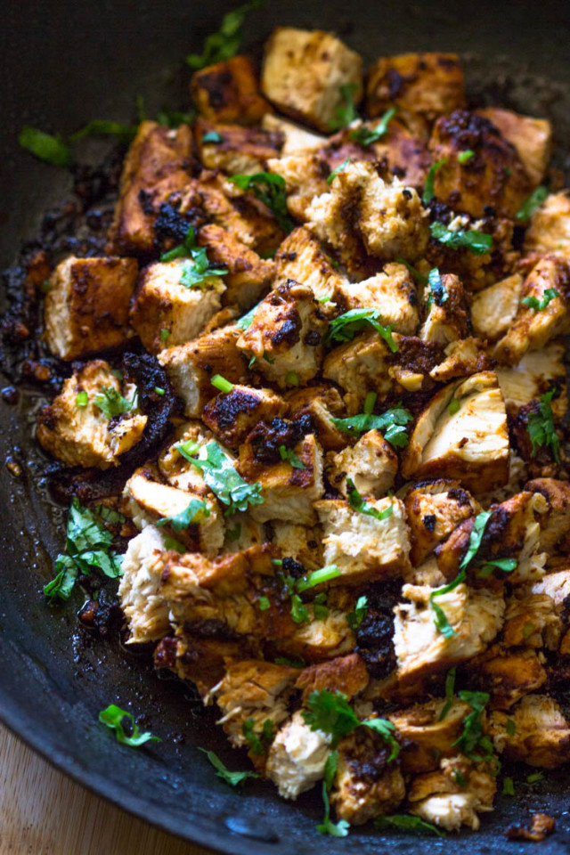
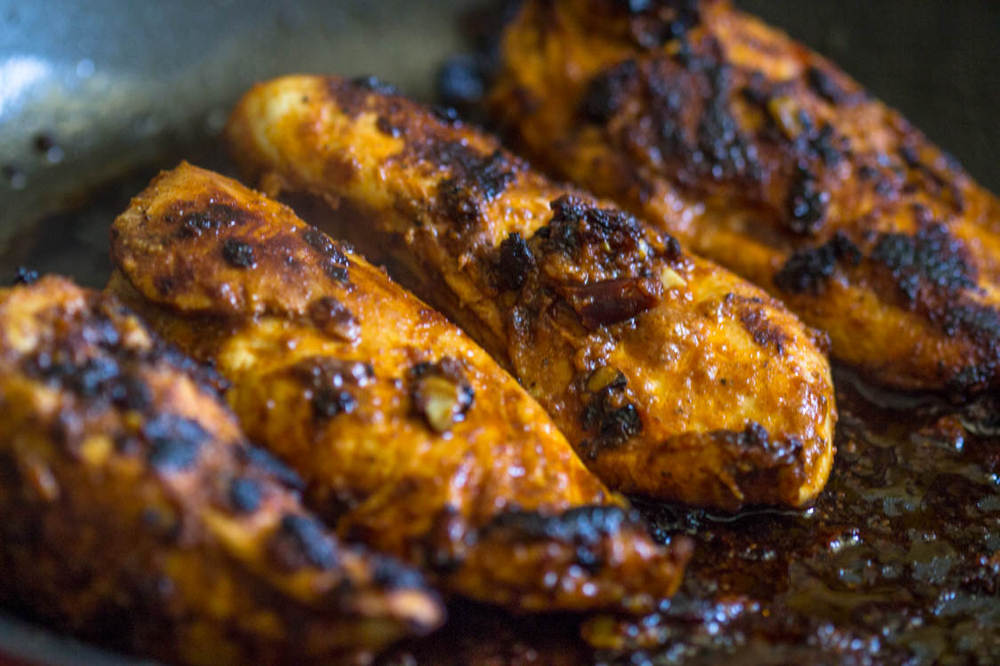

Qdoba Copycat Chicken
This recipe will have you leaving the kitchen table counting down the time
til you have your next meal!

Description
This Qdoba copycat chicken breast is one of a kind. It fits great on burrito bowls, burritos, or salads and only
costs a fraction of the price of the original Spicy Copycat grilled chicken!

Ingredients:
- 2 lbs boneless skinless chicken breasts pounded thin
- 2 cloves garlic minced
- 2 tablespoons olive oil
- 2 tablespoons adobo sauce from a small can of Chipotle peppers
- 1 tablespoon chilli powder
- 1 teaspoon cumin
- 1/2 teaspoon oregano or Italian seasoning
- 1 teaspoon salt
- 1/2 teaspoon black pepper
Instructions
- Combine chicken garlic, olive oil, adobo sauce and seasoning
in a large bowl (or ziplock bag), cover with plastic wrap.
Refrigerate for 30 minutes or up to 2 days.
- Preheat about 1 tablespoon oil in a large pan over medium-high heat. Add the chicken to the pan and cook
, turning occasionally, until completely cooked through, about 6-7 minutes per side.
- Remove the chicken ontop large cutting board and allow to rest for at least 5-10 minutes then Slice or chop. Serve in a burrito, in a salad, or on its own!
Return to main page!